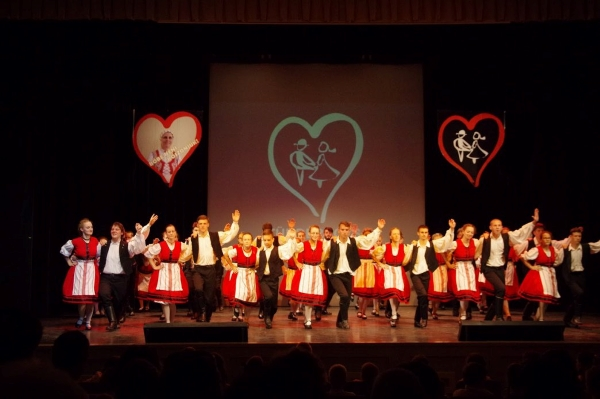
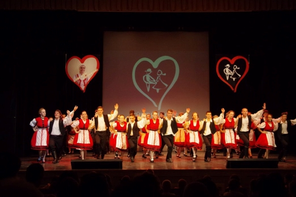

Hobbi
Bár az egyetem mellett nincs sok ídőm a hobbimmal foglalkozni,de szabadidőmben nagyon szeretek táncolni. Már óvodás korom óta néptáncolok, és emellett 5 évet társastáncoltam is.
Bár az egyetem mellett nincs sok ídőm a hobbimmal foglalkozni,de szabadidőmben nagyon szeretek táncolni. Már óvodás korom óta néptáncolok, és emellett 5 évet társastáncoltam is.
